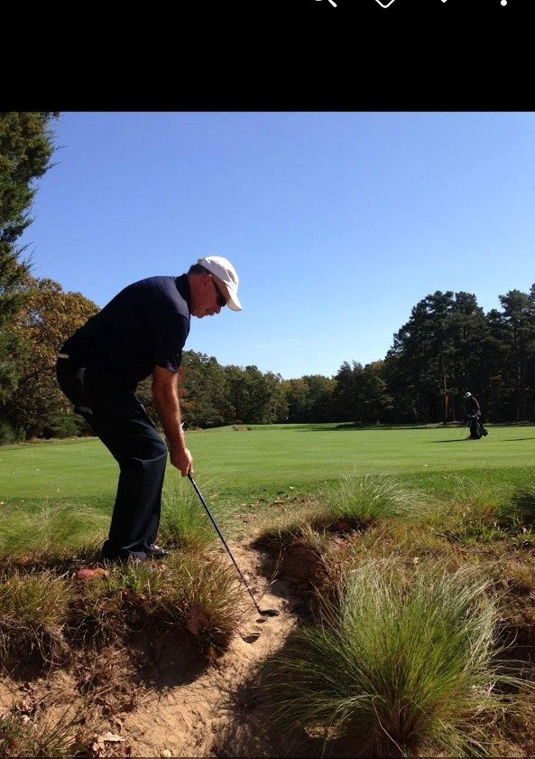

Pine Valley Golf Club · Pine Valley, New Jersey · October 2013
New Jersey · Pine Valley
Some golf courses are merely difficult. Pine Valley is something else entirely — a cathedral of sand, scrub, and silence that has humbled the greatest players in the world since its first holes opened a century ago.
This photograph was taken in October 2013, in the sandy waste that defines Pine Valley's character. The ball is in exactly the place the course intends it to be for anyone who misses the green — a reminder that at Pine Valley, the fairway is a privilege, and the green a reprieve.
There is no rough at Pine Valley. There is only the short grass and everything else — and everything else is very much by design.
Context & Chronicle
Pine Valley was the obsessive vision of Philadelphia hotelier George Crump, who purchased 184 acres of scrubland in southern New Jersey in 1912. Convinced the barren, sandy terrain was ideal for a golf course unlike any other, Crump moved onto the property in a bungalow and spent the remaining years of his life building it — consulting with the era's greatest architects, including H.S. Colt, A.W. Tillinghast, and Hugh Wilson, before his death in 1918 left the course unfinished.
The first eleven holes opened in 1914 for informal play, but the full 18-hole course was not completed until 1919, the year after Crump's death. Hugh Wilson and his brother Alan finished the remaining holes faithfully to Crump's sketches and intent. The first formal competition was played that same year, and Pine Valley was immediately recognized as extraordinary.
Pine Valley abandoned the conventions of its era. There is no rough — only island fairways of maintained grass surrounded by sandy waste areas, scrub oak, and native vegetation. Every hole demands a precise carry over sand or water to reach safety. Miss the target, and the course extracts its penalty without apology. It was, and remains, golf distilled to a binary choice: carry it or suffer.
Pine Valley has topped virtually every authoritative ranking of the world's greatest golf courses for decades. Golf Digest has ranked it first in the United States for more than 50 consecutive years. Golf Magazine consistently places it atop its World Top 100 list. Its reputation is not merely institutional — it is the consensus of everyone who has played it: there is simply nothing quite like Pine Valley.
Pine Valley is a private club — deeply so. Membership is by invitation only, and access for non-members requires a member host. The course has no tee times in the traditional sense; it operates on a relaxed schedule befitting a club that measures itself not by throughput but by experience. Women were not permitted as full playing members until 2014, when the club voted to admit them — a change a century in the making.
The par-3 5th hole — a 226-yard carry over a vast waste area to a plateau green — is one of the most feared short holes in golf. The par-4 13th demands a blind tee shot over sand to a fairway set in the pines. And the 18th, playing back toward the elegant clubhouse, invites the exhausted and elated player to reflect on what they have just survived. Every hole at Pine Valley has a personality; none are neutral.
"Pine Valley is not a golf course that flatters you. It is a golf course that reveals you — your patience, your nerve, your honesty about your own game."
The photograph captures something essential about Pine Valley's design philosophy. The sandy waste surrounding every green is not a hazard in the traditional sense — it is not a sand trap with a defined edge and a raked bottom. It is simply the land as it was found, shaped and maintained to expose the golfer's every mistake. The grass tufts growing through the sand, the irregular lie, the absence of any forgiving surface: these are features, not accidents.
George Crump chose this site because it was considered worthless agricultural land — sandy, scrubby, difficult to traverse, uninhabitable by the standards of the early twentieth century. He saw something no one else did: that the very qualities that made the land useless for farming made it ideal for the particular kind of golf he wanted to create. The native sand was already there. The scrub oak and pine already defined natural corridors. All that was needed was the vision to see a golf course in the wasteland.
The result is a course that feels simultaneously inevitable and improbable. Every hole occupies the only position it could possibly occupy; every sand carry is exactly as long as it needs to be to separate the well-struck shot from the tentative one. This sense of rightness — of a course that could not have been designed differently — is the mark of true genius in golf architecture, and it is why Pine Valley has sat atop the rankings for a century without serious challenge.
To play Pine Valley is to understand, perhaps for the first time, what golf architecture can aspire to be. It is not a test of distance or strength. It is a test of precision, nerve, and the willingness to commit fully to every shot — because at Pine Valley, commitment is the only currency the course accepts.